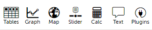
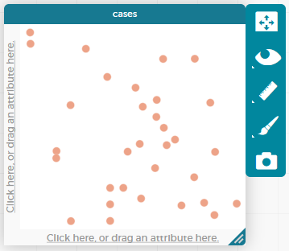

Bar Charts
Students learn to generate and compare bar charts, explore other plotting & display functions in CODAP, and (optionally) design an infographic.
|
Lesson Goals |
Students will be able to:
|
|
Student-facing Lesson Goals |
|
|
Materials |
|
|
Supplemental Resources |
| Displaying Categorical Variables | 10 minutes |
Overview
Students use the options on CODAP’s Configuration menu to produce displays and plots of the Animals Dataset.
Launch
Where have you seen infographics and graphs used to display data in the real world?
Open the Animals Starter File in CODAP.
-
Click the
graphicon from the horizontal toolbar in the upper left. (See toolbar, below.) What appears?

{kind=link}
-
Select a dot with your mouse. What happens?
-
What happens when you select a table row? How about multiple table rows?
-
What happens when you click the "eye" icon (to the right of the graph or the table, depending on which is selected)?

{kind=link}
If students report that a blank graph appears (rather than a scatter plot), prompt them to whitelist CODAP on their ad-blocker. Ad-blockers do seem to inhibit some of the functionality of CODAP (which will fortunately never advertise to users!).
Initially, the data points are randomly distributed on the graph. Selecting an orange dot reveals the name of that particular animal. Selecting a particular dot causes the table row for that animal to be highlighted in blue. Holding the shift button allows students to select multiple dots in the graphical display, or multiple rows in the table.
Students should observe that when they select a table row (or multiple table rows), the corresponding dots change color. When they set aside selected and / or unselected cases (by using the "eye" icon), they can temporarily alter the amount of pets in the dataset (with the option to restore to the original dataset).
Students can also resize the window by dragging its borders.
Investigate
Once we have a graph of randomly distributed data points, we can organize the data by selecting attributes from our table that we want to appear on the axes of our graph.
Practice manipulating the data by completing Data Displays in CODAP.
Remind students that categorical data is used to classify, rather than to measure. Only when data is being treated categorically will students be invited to fuse data points to create a bar chart. Quantitative (or numeric) data must measure or compare; it is subject to the laws of arithmetic.
To dig deeper into bar charts, have students turn to Bar Chart - Notice and Wonder.
|
People aren’t Hermaphrodite?
When students make a display of the |
Common Misconceptions
Bar charts look a lot like another kind of display - called a "histogram" - which displays quantitative data, not categorical. Histograms and Bar Charts are very different! In CODAP, however, making a histogram and making a bar chart start the same way: by creating a dot plot that will be modified. This may cause students to think the resulting displays are the same, simply because making them starts the same way.
Synthesize
Bar charts display how much of the sample belongs to each category. If they are based on sample data from a larger population, we use them to infer the proportion of a whole population that might belong to each category.
Bar charts are mostly used to display categorical columns.
While bars in some bar charts should follow some logical order (alphabetical, small-medium-large, etc), they can technically be placed in any order, without changing the meaning of the chart.
|
Mini Project: Making Infographics Infographics are a powerful tool for communicating information, especially when made by people who actually understand how to connect visuals to data in meaningful ways. Making Infographics is an opportunity for students to become more flexible math thinkers while tapping into their creativity. This project can be made on the computer or with pencil and paper. There’s also an Infographics Rubric to highlight for you and your students what an excellent infographic includes. |
| Exploring other Displays | 30 minutes |
Overview
Students explore the CODAP data display options available to them. In doing so, they experiment with new charts and get comfortable with CODAP as a platform for doing data science.
Launch
There are lots of different kinds of charts and plots that we can build in CODAP! Explain to students that you are going to give them three minutes to see how many different displays they can produce. Invite them to be playful - to click buttons and select from menu options to see what they can produce. (If students need a bit of encouraging, you might mention that histograms, scatter plots, and linear regressions are possible!)
When time is up, invite students to share.
-
What did you discover?
-
When did the
configurationmenu appear?-
When there is another possible configuration of the data - for instance, when dots can be fused into bars - we see this menu.
-
-
When did the
measuremenu appear?-
This menu appears when there is an opportunity to change what is shown _along with the points - for instance, connecting lines, a regression line, or a count_.
-
Explain that CODAP is designed to be student-friendly and that the interface encourages guesswork… but that we can save some time by being a bit more strategic.
Investigate
In this section, students will develop a methodical approach to creating displays. First, demonstrate how to create a bar chart showing the sex breakdown of the animals. To do this, model asking yourself three important questions (below) in order to build a bar chart in CODAP.
-
We’re going to complete Practice Plotting together. To make a bar chart showing the sex of animals from the shelter, I will ask myself a series of important questions.
-
Which attributes on which axes?
-
Sex belongs on the x-axis.
-
-
What type of data?
-
Male, female, and hermaphrodite are all categories. The bar chart will display categorical data.
-
-
What configuration?
-
CODAP initially creates a dot plot of the data. I will need to fuse the dots into bars.
-
Focus on supporting students in learning how to pose productive questions when looking at data. Invite students to repeat the process you just modeled as they create a bar chart showing the species of animals from the shelter.
-
Now, with your partner, complete Practice Plotting 2.
-
For an extension, try Practice Plotting - Challenge.
Common Misconceptions
There are many possible misconceptions about displays that students may encounter here. But that’s ok! Understanding all those other plots is not a learning goal for this lesson. Rather, the goal is to have them develop some loose familiarity.
Synthesize
Today you’ve added more data displays to your toolbox. You can create bar charts to visually display categorical data, and you’ve developed a general approach to guide you as you create other displays.
You will have many opportunities to use these concepts in this course, by applying what you’ve learned to answer data science questions.
These materials were developed partly through support of the National Science Foundation,
(awards 1042210, 1535276, 1648684, and 1738598).  Bootstrap by the Bootstrap Community is licensed under a Creative Commons 4.0 Unported License. This license does not grant permission to run training or professional development. Offering training or professional development with materials substantially derived from Bootstrap must be approved in writing by a Bootstrap Director. Permissions beyond the scope of this license, such as to run training, may be available by contacting contact@BootstrapWorld.org.
Bootstrap by the Bootstrap Community is licensed under a Creative Commons 4.0 Unported License. This license does not grant permission to run training or professional development. Offering training or professional development with materials substantially derived from Bootstrap must be approved in writing by a Bootstrap Director. Permissions beyond the scope of this license, such as to run training, may be available by contacting contact@BootstrapWorld.org.